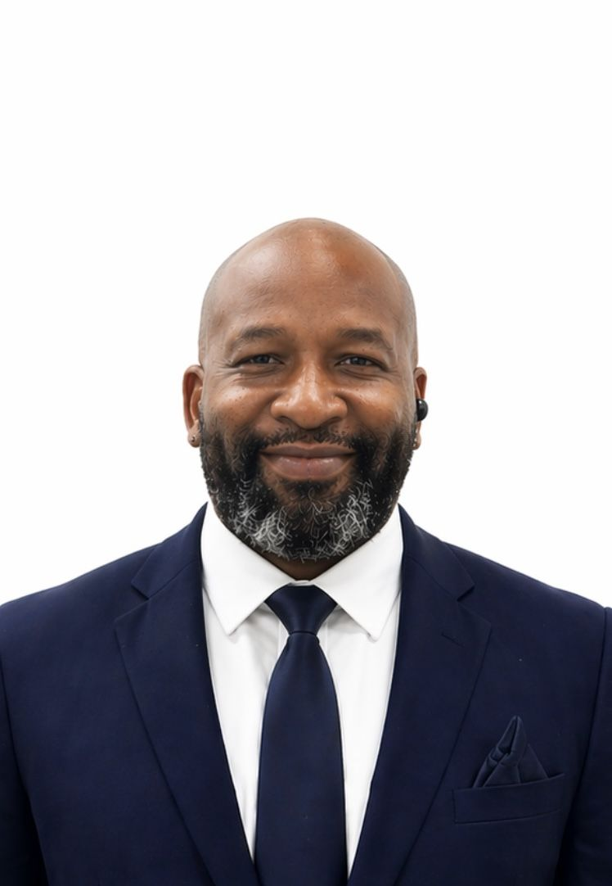
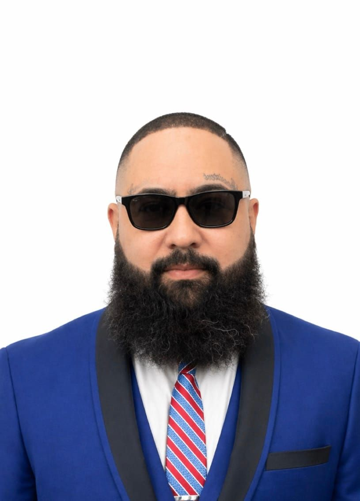

Learn from master barbers with decades of real-world experience — every ABI instructor is a working professional and most are ABI graduates themselves.
Known to generations of barbers as “King David,” he is a living cornerstone of ABI and one of the most respected names in New York barbering education. With over 50 years behind the chair and more than 30 years teaching, he is widely recognized as the longest-serving barber instructor in NYC. A licensed instructor, director and manager, he has personally trained thousands of barbers who went on to become entrepreneurs, shop owners and industry leaders.
A Queens native and master barber known as the best one-armed barber in the world. He built his craft one hand, full heart, no shortcuts — earning his license as an ABI student and returning to teach the next generation. He covers the full range of the craft along with barber etiquette and professionalism.

Cutting hair since he was a young man, Barry was recognized and mentored by Harold “Barkim” Brown — moving from standout student to trusted instructor. He teaches with the authority of someone who has lived the craft from every angle.
A former standout ABI student turned instructor — first one in, last one out. A state-board exam-prep specialist whose teaching is thorough and superb, in both English and Spanish. For many Spanish-speaking students, Freddie is the reason they stay, succeed and graduate.
ABI’s youngest instructor — he chose the craft and mastered it. Impeccable shaving skills and precise scissor work, with high-energy teaching; he’s always on the practical floor coaching fades and razor angles. Speaks English and Spanish.
Learned the trade following his brother Mike — a 30-year industry veteran and ABI graduate who runs a Manhattan barbering and tattoo business. Richard brings dual expertise in barbering and tattooing, and teaches to give back. Speaks English and Spanish.

Behind the chair since 1985 and founding director of ABI Bronx — part of the location since its beginning. A former New York State Board Examiner with insider-level knowledge of licensing and compliance, and a national industry influencer with brand partnerships including Andis.
A Licensed Master Barber who earned his license at just 19, with 8+ years of experience and multiple barbering-competition wins. Bronx-born and Queens-raised, with a signature style rooted in fundamentals — and always studying the latest trends, tools and techniques.
A Licensed Master Barber since age 19 and instructor at ABI Bronx, with 8+ years behind the chair. Bronx-born and Queens-raised, he teaches from recent lived experience and connects with students as a peer — in English and Spanish.